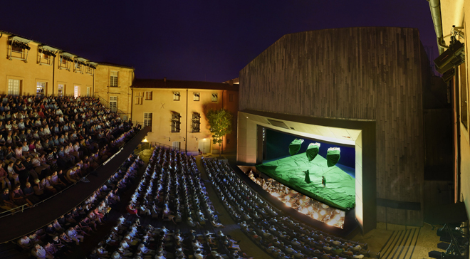
A work trip to Aix-en-Provence to the open-air Théâtre de l'Archevêché to see Britten's A Midsummer Night's Dream (seen above) and Mozart's Le Nozze di Figaro plus staying on for a short holiday staying in a beautifully-situated villa with singer Keith Lewis and his partner, Kit Grover.
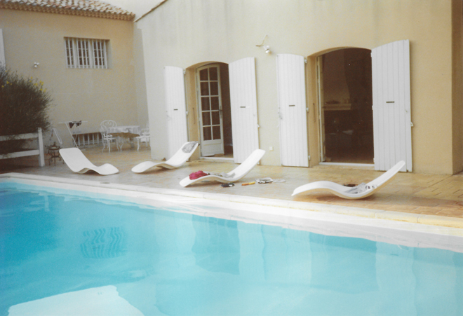
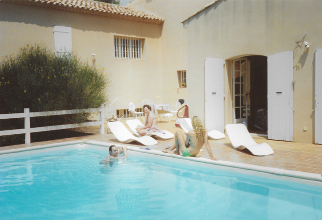
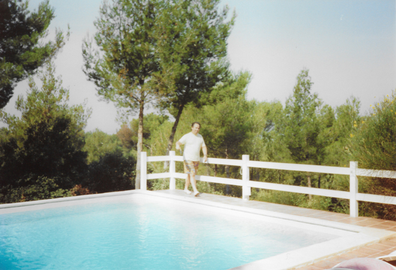
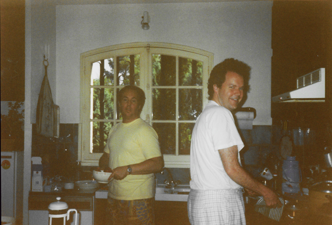
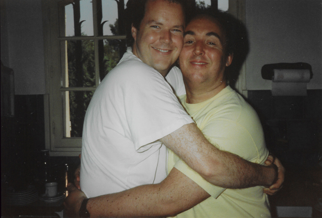
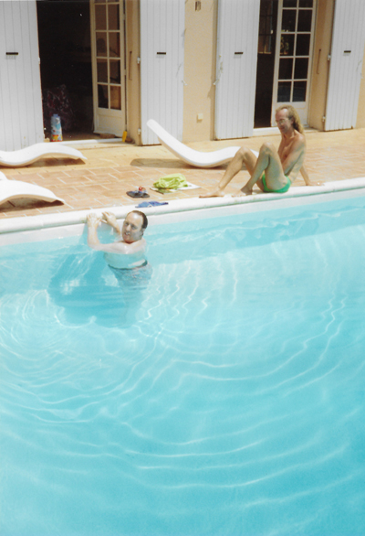
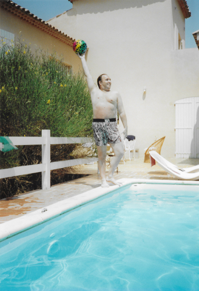
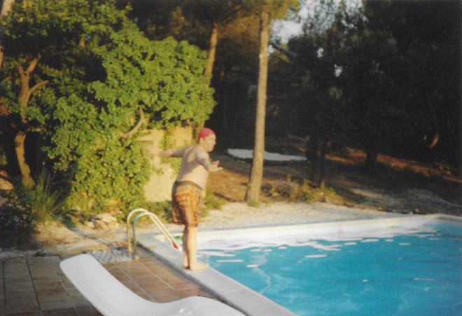
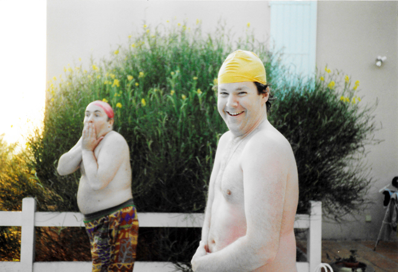
There were two other designer friends of Kit's staying at the villa, and they all went off to sit through Rameau's four-hour Castor et Pollux. Tickets had completely sold out (and, to be honest, I wasn't that keen anyway) so I spent the evening at the villa on my own in splendid tranquility.
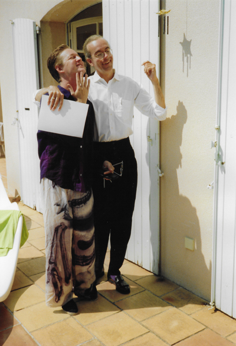
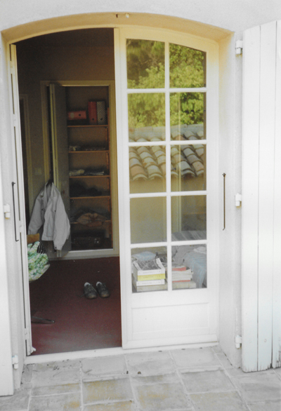
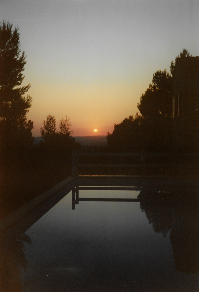
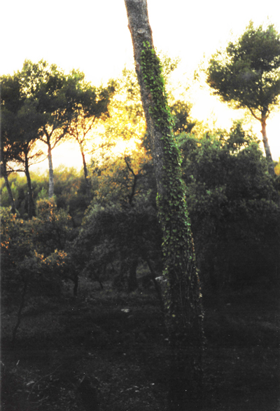
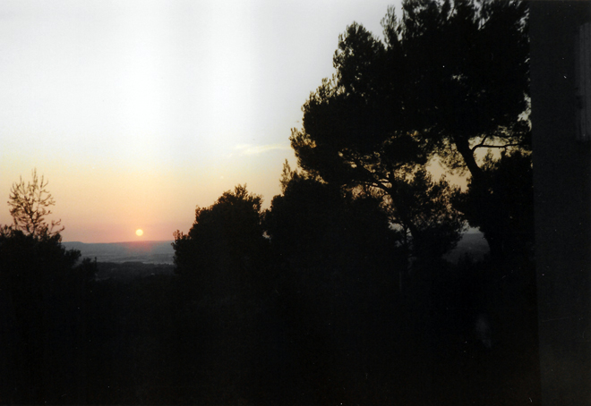
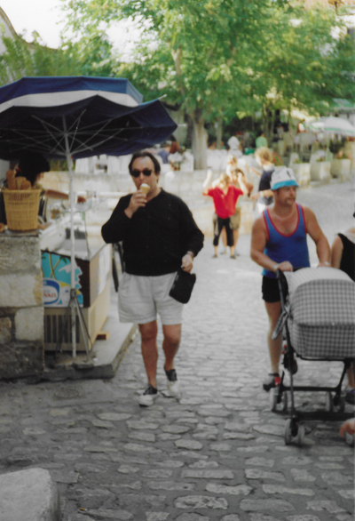
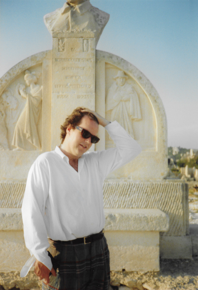
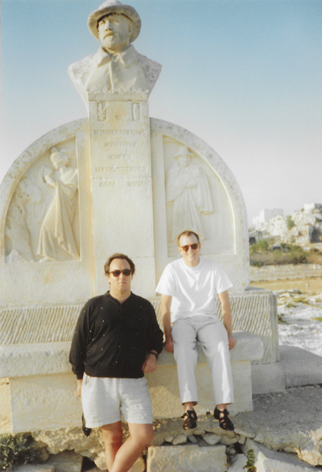
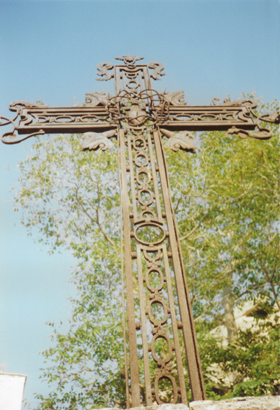
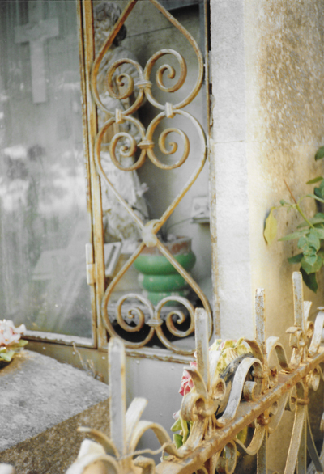
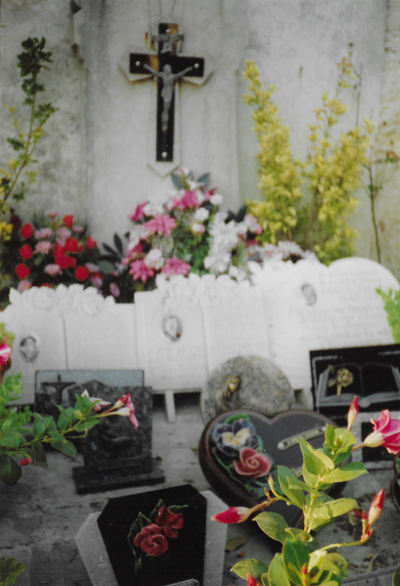
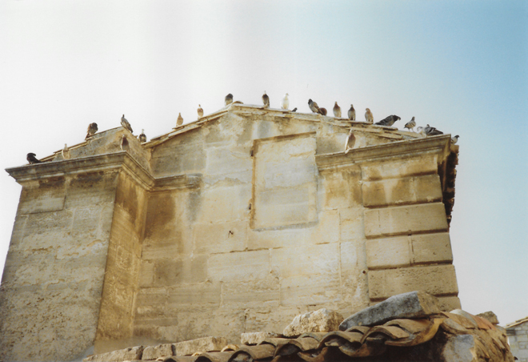
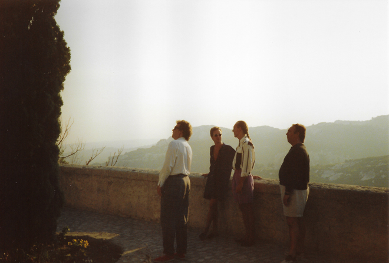
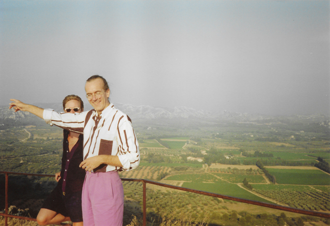
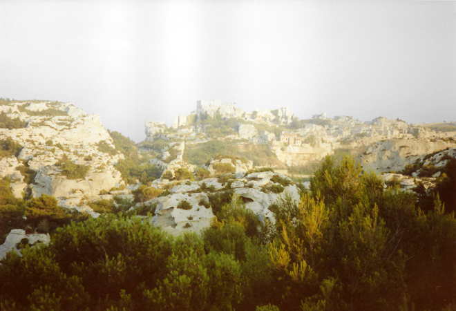
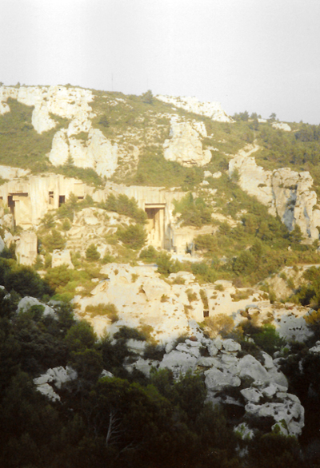
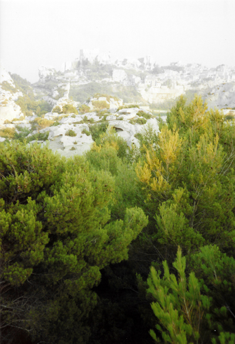
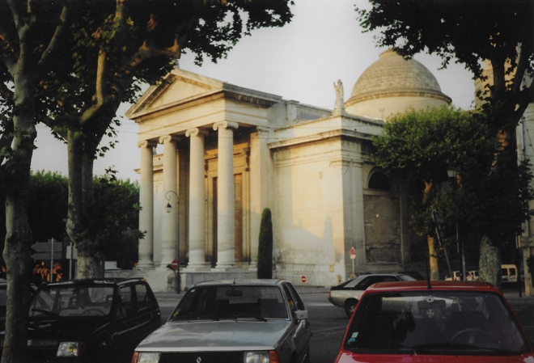